Abstract
Social networks undergo changes in the course of time due to their natures. As such, it is crucial to monitor
and detect these changes in a more meticulous way than the ones in existing methods. These changes encompass any
variations, including adding/deleting edges and vertices that could be emerged either by random noises or
considerable changes in network structure. One of the changes to which a network might be subjected is the
change in the community structure. In this paper, firstly, the modularity matrix is applied in a statistical
model for a better comprehension of the network changes. The statistical model presents the connections between
the actors or vertices by employing the Weibull distribution. Secondly, the Kalman filter is used to estimate
community status of the network. Finally, estimation and real measures are compared in Hotelling and EWMA
control charts at the monitoring stage by simulating the Zachary karate club network through different change
scenarios.
Figures:
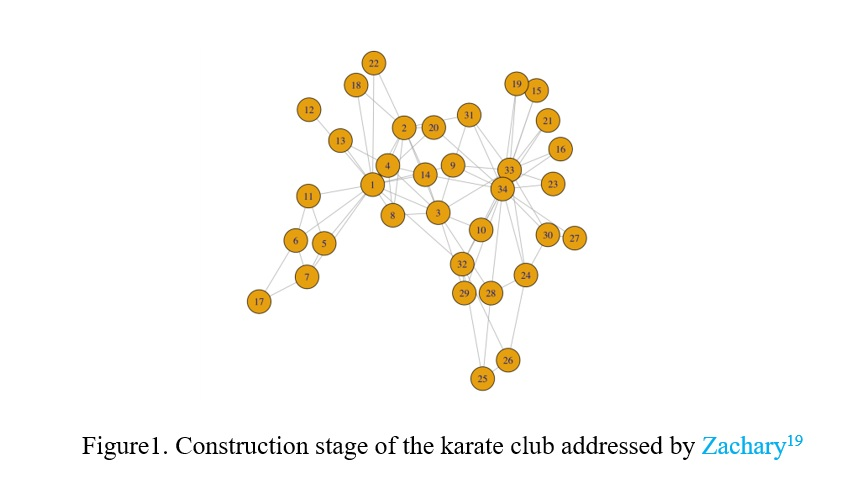
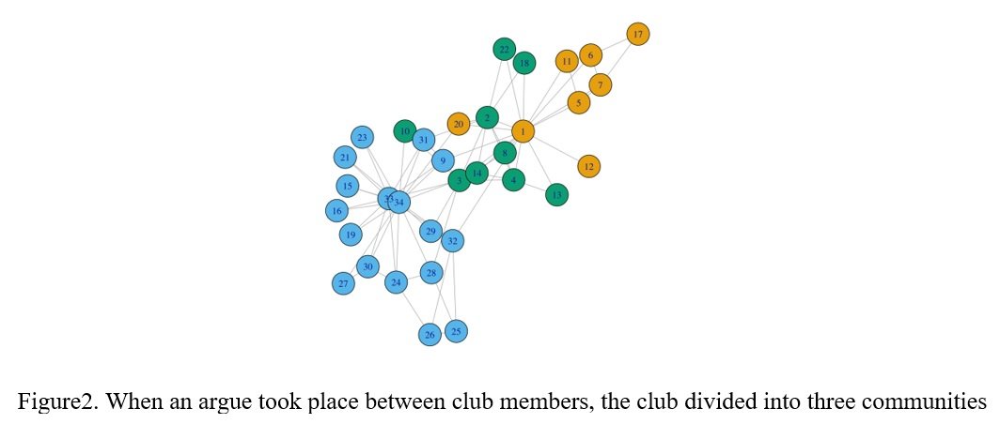
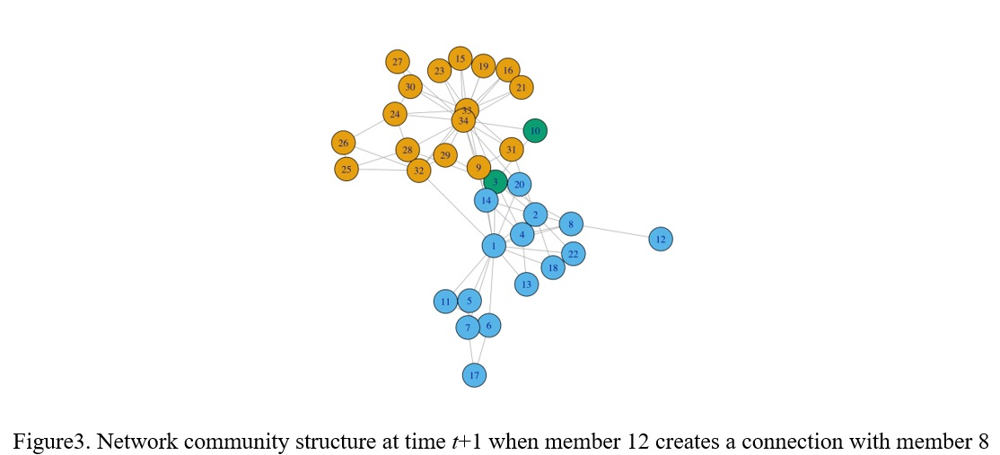
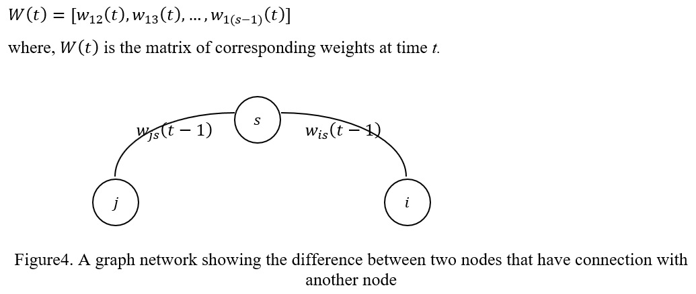
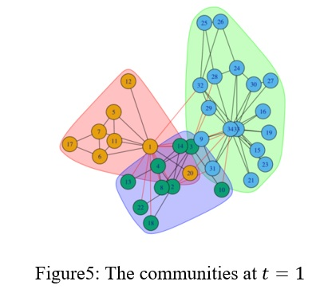
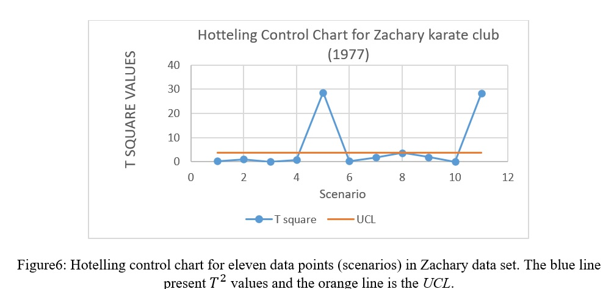
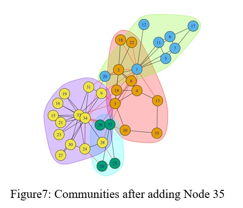
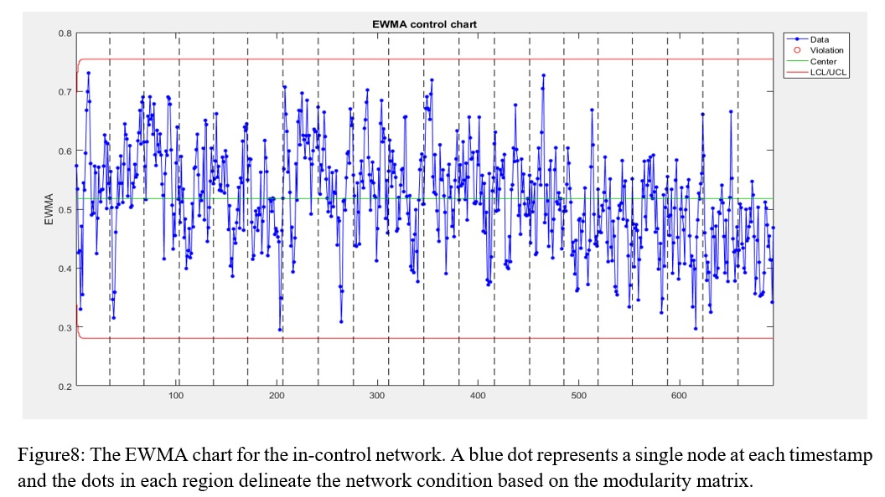
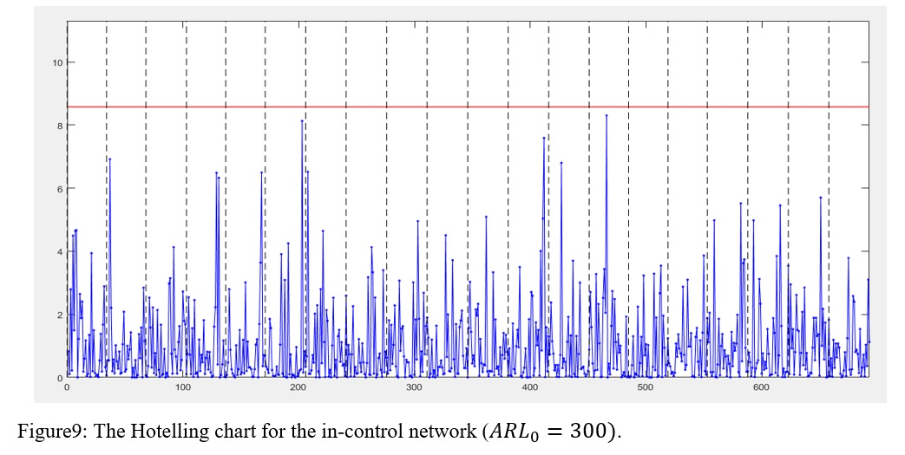
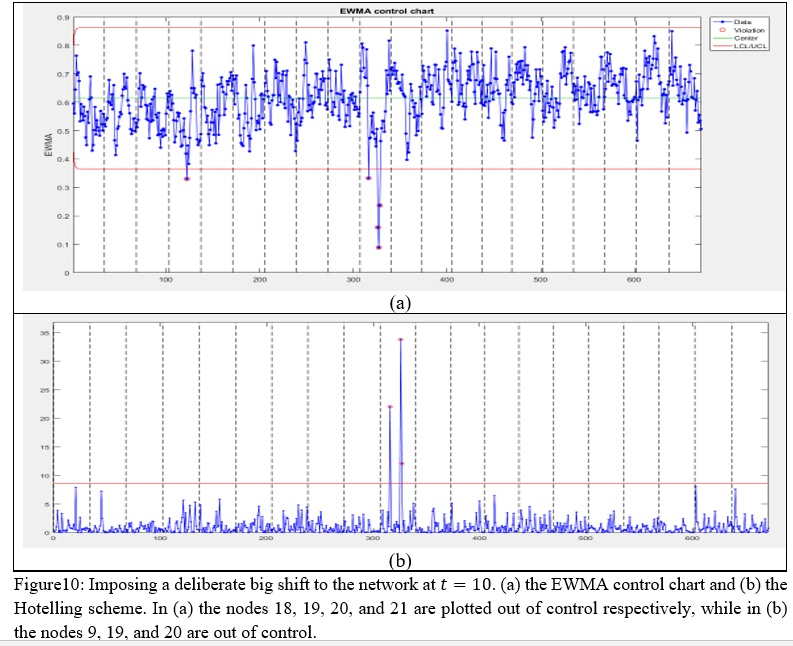
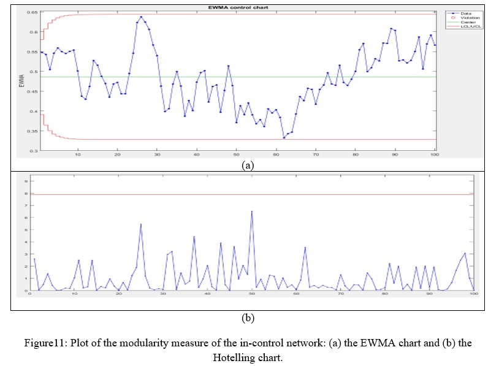
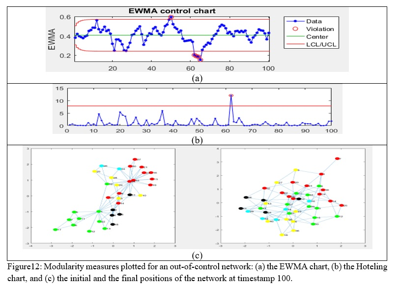